Logging at scale using Graylog - Billion+ messages, 100K req/sec
What is Graylog?
- Open source log management that actually works.
- Search, analysis and alerting across all of your log files.
Ola Infrastructure Overview
- Hundreds of micro-services
- 100k requests per second
When did we start using it?
- We found managing ELK clusters require are maintenance intensive.
- We were revamping our infra and centralized logging was a basic requirement.
Great UI, Best for viewing Logs
Easy manageability of elasticsearch indexes
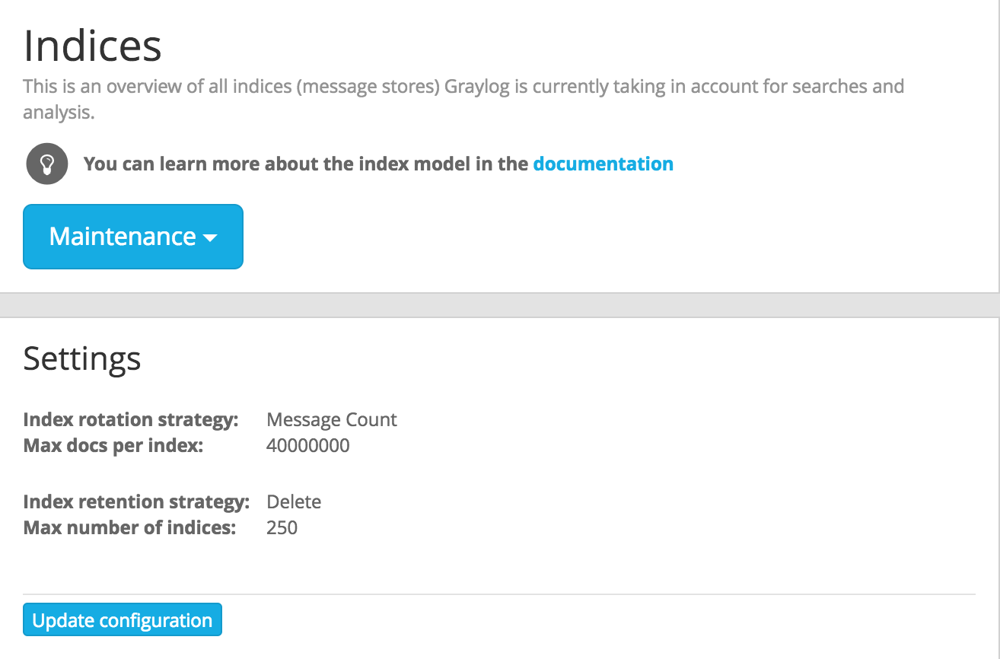
Realtime log analysis and alerts
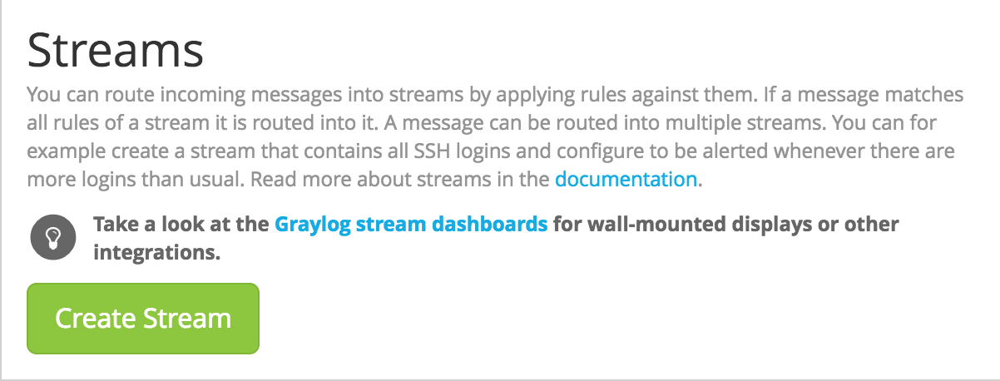
How the pipeline looks?
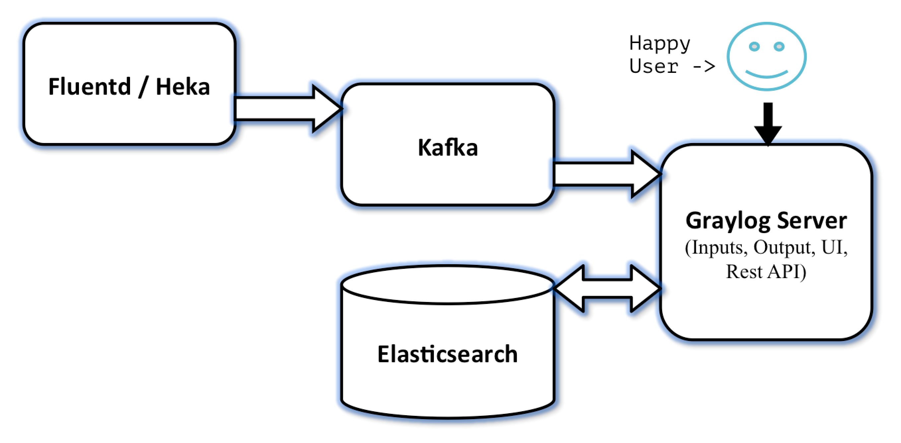
What does each component do?
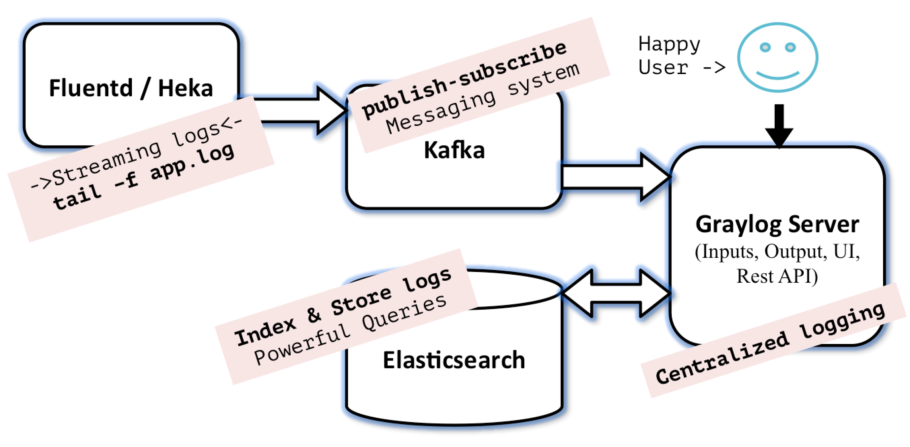
#1 Huge Lag for Application logs in Graylog UI
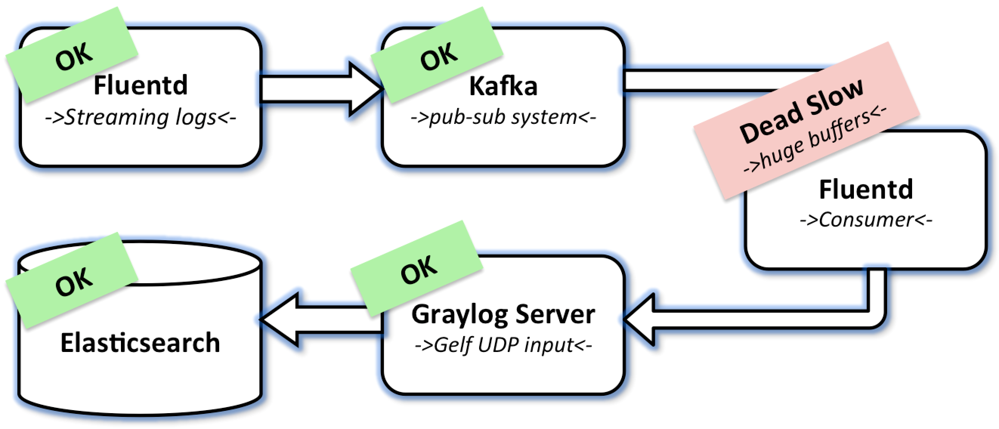
#2 Docker service crash due to Fluentd log driver
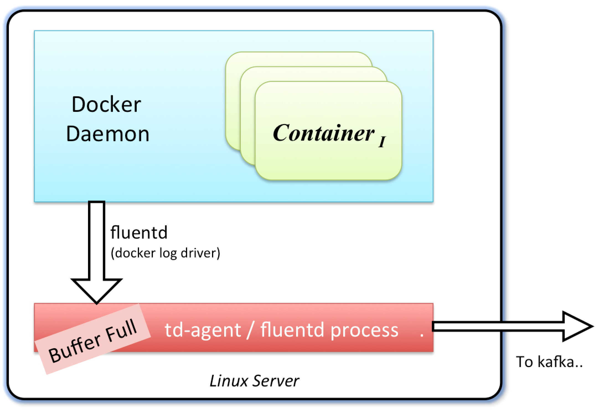
#3 Exceptions in Graylog server due to 3 MB log messages
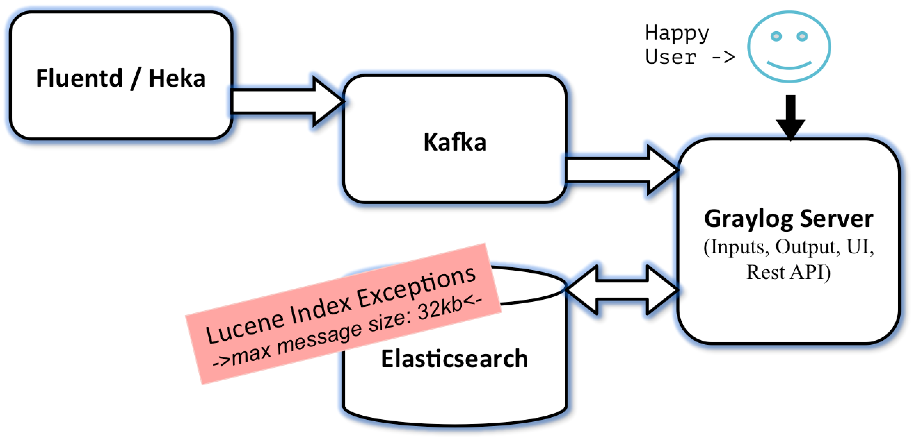
#3 Truncate log messages before sending to kafka
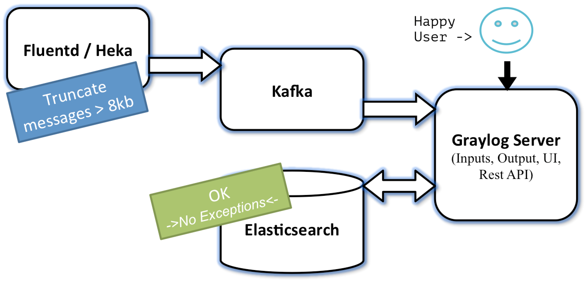
#4 Inconsistent schema problem
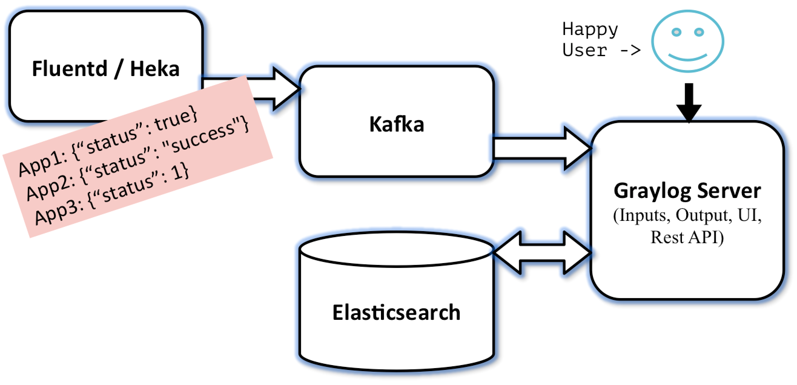
#4 Convert everything to string at source
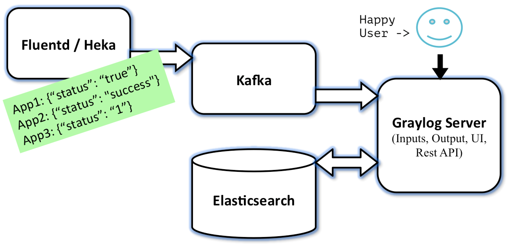
#5 Journal Utilisation too high, uncommitted messages deleted from journal
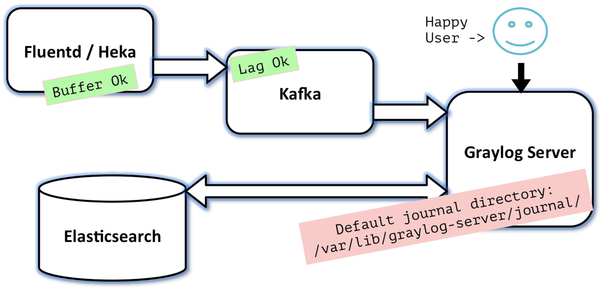
#5 Final setting - disable buffers and journal

#6 Missing logs due to slow fluentd kafka plugin
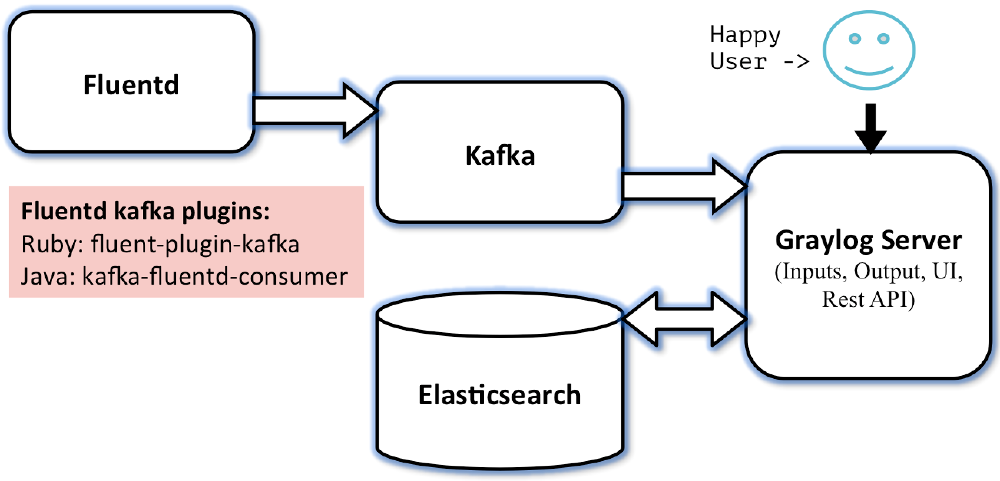
#6 Heka is superfast, 10x less CPU, 5x less memory
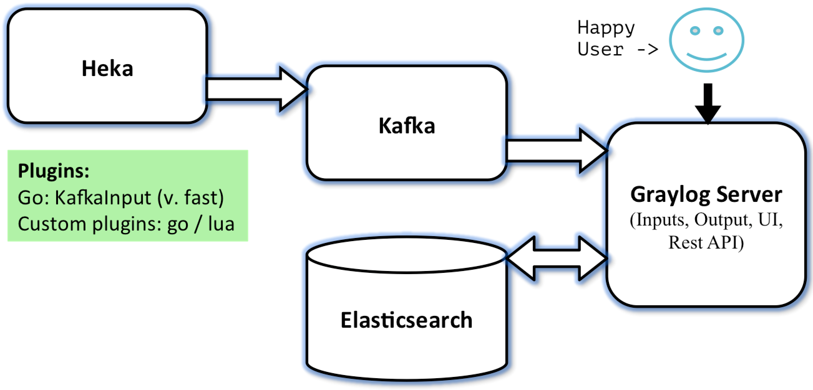
Who all loved it?
- Developers
- Devops
- Management